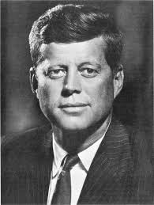

1961
1961 1 jan. Årets motto är "Låt oss vara representanter för Honom."

1961: Billy Graham och nyvalde presidenten John F Kennedy var
vänner. I sina memoarer skriver Billy Graham om en bilresa med
presidenten: "På vägen tillbaka till Kennedys hus, stannade den nyvalde
presidenten bilen och vände sig till mig och frågade,
'Tror du på återkomsten av Jesus Kristus?'.
Källa:
bible.org/illustration/billy-graham
Mellan åren 1961 och 1967, så visade sig en arketypisk Kristuslik
varelse, påtagligt i fast form, upprepade gånger för Richard Grave i
England (och därefter, som rapporterats, till andra människor, ex. i
Danmark) och förkunnade i en serie av dikterade uttalanden att en
universell kosmisk operation håll på att utföras som öppnar vägen för
den Nya Tidsåldern.
Ref:
Universal Link
27 jan. Ye-Jin Nim första dottern föds. (11 dec. månkal.) - 4 Positioners grundval för första gången etablerad. (Gud-make-hustru-barn)
17 apr. 'Dagen för den Påtagliga återuppståndelsen' proklameras under påskgudstjänsten.
Efter att ha utvecklat witnessing, så börjar Han att resa runt över hela landet.
33 par välsignas. (1:e apr. mänkal.)
20 juli 40 dagars sommar pionjär-witnessing.
31 aug. Fem regioner och 32 områden utvecklas till nio regioner och 72 områden.
20 dec. 40 dagars vinter pionjär-witnessing.